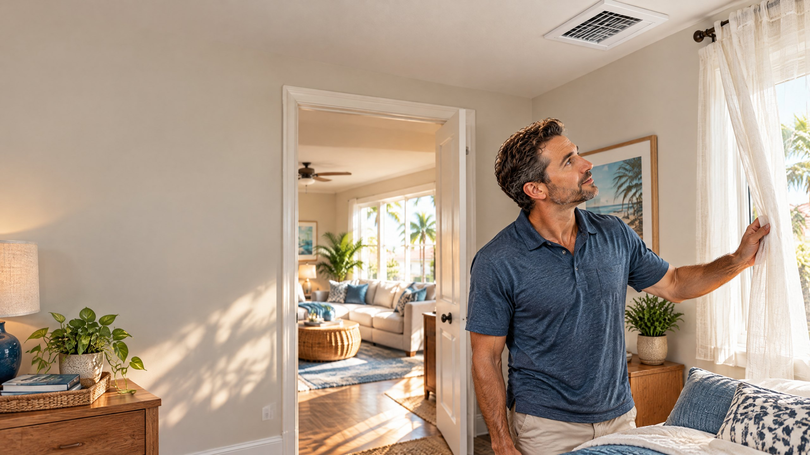

Direct Answer
Usually, no. Closing AC supply vents in unused rooms is not a reliable way to lower your Tampa cooling bill. A central system still serves the house, and shutting registers can reduce airflow and disturb duct pressure instead of creating a separate cooling zone. Leave normal supply and return pathways clear; if a room consistently feels too warm or cool, have the airflow evaluated rather than closing several vents.

It sounds logical: stop cooling a guest room you rarely use and send the air somewhere else. But a typical central air conditioner and its duct system are designed to move air across the indoor coil and through connected rooms. Closing a register changes the path that air can take; it does not necessarily reduce the equipment's workload or the time it operates.
This article answers a single homeowner question about closing supply vents. It is not a guide to diagnosing every high electric bill. For broader ways to manage cooling use, see our Tampa HVAC energy-bill tips.
First, Identify the Vent You Mean
A supply register delivers conditioned air into a room, often through adjustable louvers. A return grille pulls household air back toward the system. A homeowner may call both a “vent,” but blocking a return is a different and potentially significant airflow restriction. Before changing any setting, identify what the opening does when the system runs, and keep furniture, rugs, and storage away from both supply and return openings.
In many Tampa-area houses, one central thermostat responds to conditions near that thermostat—not to each room independently. Closing the supply in a spare bedroom does not tell a standard single-zone system to recalculate the cooling load or reduce its capacity. The amount of air redirected to other rooms depends on the ducts, fan, and pressure in that particular system; it is not a promised efficiency gain.
Why Closing Multiple Registers Can Backfire
The U.S. Department of Energy's homeowner HVAC guide specifically addresses shutting vents and closing a door in an unused room to save energy. It does not recommend the practice: restricting the paths for conditioned air can reduce airflow through the air handler, create pressure imbalances, and stress duct connections.[1] Those are potential effects, not a claim that every partially adjusted register will break an AC or raise every bill.
Airflow matters on the equipment side as well as at the room. ENERGY STAR advises checking blower components, filters, and cooling coils as part of maintenance because airflow problems can affect comfort and efficiency.[2] If a system is already struggling with a loaded filter, weak blower, or restricted ducts, closing more supplies may make the problem harder to understand. A homeowner cannot identify actual airflow or duct pressure from the position of a register alone.
Sometimes the symptom is more serious than a warm bedroom. Restricted airflow is among several possible contributors to an iced AC line or indoor coil; other causes need separate testing. If you see ice, a register setting is not a diagnosis. Follow the system's operating guidance and request an AC repair assessment rather than repeatedly running equipment that is not cooling normally.
Does One Partly Closed Vent Cause the Same Problem?
Not necessarily. A small adjustment to one register is different from closing several rooms or blocking a return grille. Systems and duct layouts vary, so there is no universal number or percentage of vents that every homeowner can close without changing system performance. If you are considering a repeated adjustment because one room is uncomfortable, keep track of what changes elsewhere and ask a technician to assess the specific duct and airflow setup.
Do not force a stuck ceiling register, seal a grille with tape, block it with furniture, or adjust hidden duct dampers without knowing how the system was designed. An accessible register can tell you whether air seems to reach the room, but it cannot show the complete system balance. Persistent weak airflow, unusual noise, or large room-to-room temperature differences are more useful reasons to investigate than a rule of thumb from another house.
What About a Closed Door or a Zoned System?
Closing a door and closing a supply are not identical actions. In a room without an adequate return-air path, keeping the door shut can affect how air moves back to the central system. The DOE guide discusses pressure imbalance when homeowners shut vents and close the door together.[1] Whether a particular closed door causes a measurable issue depends on the home's return layout and any designed transfer path.
Designed zoning is different from simply closing registers. A zoned installation may use controls and dampers chosen for the equipment and duct system; a professional must consider airflow and balance when configuring it. DOE notes that even professionally installed dampers can affect system efficiency and balance.[1] Do not assume your existing single-zone AC becomes a zoned system by closing a few ceiling vents.
A useful way to describe the problem
“The guest room stays much cooler than the living room, and I have considered closing its vent. Can you check the supply and return airflow and explain whether this duct system can be adjusted?” That gives a technician a specific comfort concern rather than asking for a generic energy-saving promise.
What to Do Instead in a Tampa Home
Start with simple observations. Confirm that supply registers and return grilles are not obstructed, check whether the filter needs attention according to its instructions, and note which rooms are warmer or cooler at a similar time of day. ENERGY STAR recommends regular filter attention and professional checks of blower operation, coils, and controls.[2] Avoid opening equipment or attempting to measure electrical parts yourself.
Next, look beyond the register. A west-facing room may receive strong afternoon sun even when its airflow is ordinary. Tampa Electric recommends shading sun-exposed windows, sealing household air leaks, and considering a home energy audit to identify larger opportunities.[3] These are more defensible starting points than expecting a closed guest-room vent to produce a particular bill reduction. The benefit in your home depends on its construction and use.
If one room still lags behind after obvious obstructions are removed, ask for an evaluation of the ductwork and room airflow. A technician can examine register delivery, returns, leakage or damage where relevant, and whether the system is operating as intended. That is a narrower request than replacing the equipment and a better way to identify why an occupied room stays uncomfortable. On The Way Heating & Air serves Tampa, Lutz, Wesley Chapel, and nearby North Tampa communities; Dustin Miller began working in HVAC with his father in 2006.
Frequently Asked Questions
Will closing an unused-room vent send more cool air to another room?
Some air may be redistributed, but how much depends on the duct and fan setup. Closing registers can also change pressure and reduce total airflow, so it is not a dependable way to fix a warm room or lower an electric bill.
Is it okay to adjust just one supply register slightly?
A minor adjustment is not the same as shutting several rooms, but there is no universal setting that fits every system. Watch for weaker cooling, noise, or new room imbalances, and request an airflow assessment if the problem continues.
Should I close the guest-room door when the AC is on?
A closed door can affect the return-air path in some homes. The impact depends on the return grille and transfer-air design; it is not the same as a properly designed cooling zone. Ask about the room's supply and return airflow if comfort changes with the door closed.
What if one Tampa room is always hotter than the others?
Check for a blocked supply or return and afternoon sun first. If the difference persists, a technician can examine duct delivery, return airflow, and equipment operation rather than assuming that closing other vents will solve it.
Sources
- U.S. Department of Energy: Energy Renovations HVAC Guide, section 2.2.3, Zoning
- ENERGY STAR: Heating and Cooling Maintenance Checklist
- Tampa Electric: Home Energy-Efficiency Tips
Reviewed by a Local HVAC Owner
Dustin Miller, Owner of On The Way Heating & Air. Dustin began working in HVAC with his father in 2006. This article explains general central-AC airflow considerations, not a diagnosis of your home's duct system or a guarantee about energy costs. A technician can evaluate the actual equipment and room comfort concern.